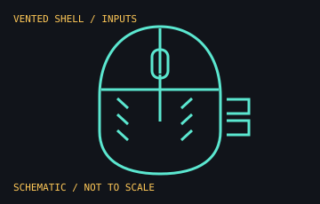

[ MICE AND TRACKBALLS // IDENTIFIED COMPONENT ]
SteelSeries Aerox 5 Wireless
Rechargeable, right-handed wireless gaming mouse with a lightweight perforated shell, multiple connection modes, and a side control panel.

MODEL IDENTIFICATION: SteelSeries model 62406 is the Aerox 5 Wireless family identifier shown in its product information guide. Confirm the complete regulatory/product label; the wired Aerox 5 is a separate device.
Recorded specifications
| Sensor / tracking | SteelSeries TrueMove Air optical sensor; 100–18,000 CPI, 400 IPS, and 40 g acceleration per the product guide. |
|---|---|
| Controls / shell | Nine programmable controls, including a five-button side panel with an up/down flick switch; perforated shell with IP54 AquaBarrier protection rating. |
| Connections | 2.4 GHz Quantum 2.0 wireless and Bluetooth; detachable USB-C cable is used for wired play and charging. |
| Power / mass | Rechargeable battery; manufacturer advertises up to 180 hours. Model guide lists approximately 74 g; the exact measurement depends on configuration. |
| Lighting | Three-zone PrismSync RGB lighting; effects and programmable profiles use SteelSeries GG. |
Compatibility and handling
- Bluetooth and 2.4 GHz are separate radio modes; use the included receiver for Quantum 2.0 and USB-C for wired operation or charging.
- SteelSeries GG is required for full customization and lighting control; base HID pointer functions are OS dependent.
- IP54 AquaBarrier is a resistance rating, not waterproofing; avoid immersion and follow the product guide for cleaning.
- Battery runtime varies by lighting, radio mode, polling, battery condition, and settings. Check the model guide before substituting a cable or receiver.
Manufacturer sources
- SteelSeries — Aerox 5 Wireless product pageManufacturer product information for sensor tracking, connection modes, lighting, and protection.
- SteelSeries Support — Aerox 5 Wireless user manual and product guideModel 62406 setup, identification, safety, and technical reference.